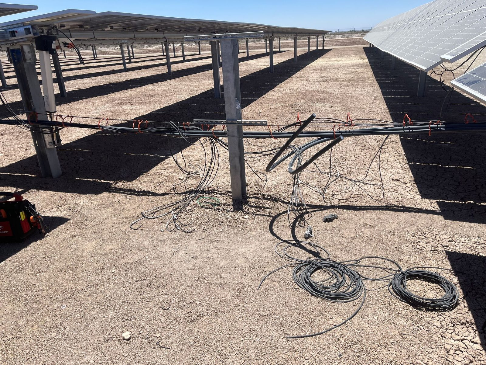

DC Field Systems
String circuits, connectors, homeruns, combiner boxes and field wiring troubleshooting.
Electrical support for utility-scale and commercial energy assets, including DC field work, combiner boxes, inverters, PCS equipment, testing, troubleshooting and maintenance.
Work scopes can be organized around commissioning, corrective maintenance, preventive maintenance, outage support and documented testing.
String circuits, connectors, homeruns, combiner boxes and field wiring troubleshooting.
Electrical-side inspection, isolation, component replacement support and return-to-service coordination.
Rack-side electrical support, auxiliary systems, PCS interfaces and corrective work coordination.
Equipment inspection, terminations, switching support and planned maintenance scope.
Insulation-resistance testing, continuity checks, thermal inspection and defined verification activities.
Failure assessment, damaged-component replacement, fault isolation and documented closeout.
Select a stage to understand its role and common service activities.

Modules and string circuits collect energy across the field. Work may include connector, wiring, insulation-resistance, continuity and physical-condition checks.
Storage work requires coordination across battery enclosures, controls, PCS equipment, auxiliary power, transformers and operating procedures.
Final scope depends on OEM guidance, contractual requirements, site procedures and equipment history.
Visual condition, alarms, housekeeping, obvious damage and abnormal indications.
Selected equipment inspection, connections, filters, auxiliary systems and trend review.
Broader inspection and selected tests based on equipment and site history.
Defined preventive maintenance, testing and documented deficiencies.
Condition trends, component strategy and future outage recommendations.
Results are most valuable when tied to equipment identification, operating conditions, photos and clear acceptance criteria.

A documented response to damaged components, overheating, insulation concerns or failed field circuits.
Discuss a Corrective ScopeIdentify affected circuits, visible damage, thermal evidence and surrounding conditions.
Define parts, field wiring, isolation requirements and return-to-service criteria.
Complete selected electrical checks and verify restored circuit condition.
Photos, readings, repaired components and recommendations for related equipment.
Yes. Scope is coordinated with site operations, access rules, LOTO requirements and approved equipment boundaries.
Yes, when the test is appropriate for the equipment and an approved procedure, voltage and acceptance criteria are established.
Yes. Photos, equipment IDs, readings, findings and recommendations can be organized for project and maintenance records.
Yes. Electrical support can be tailored to PV field equipment, inverter/PCS systems, BESS auxiliary systems, transformers and related balance-of-plant equipment.
Start with equipment details, site conditions and the result you need.